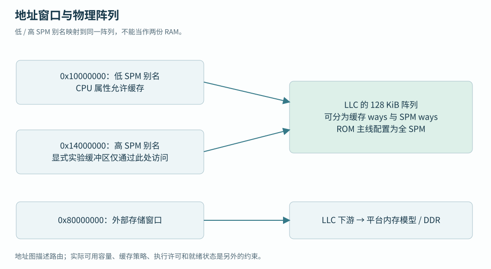
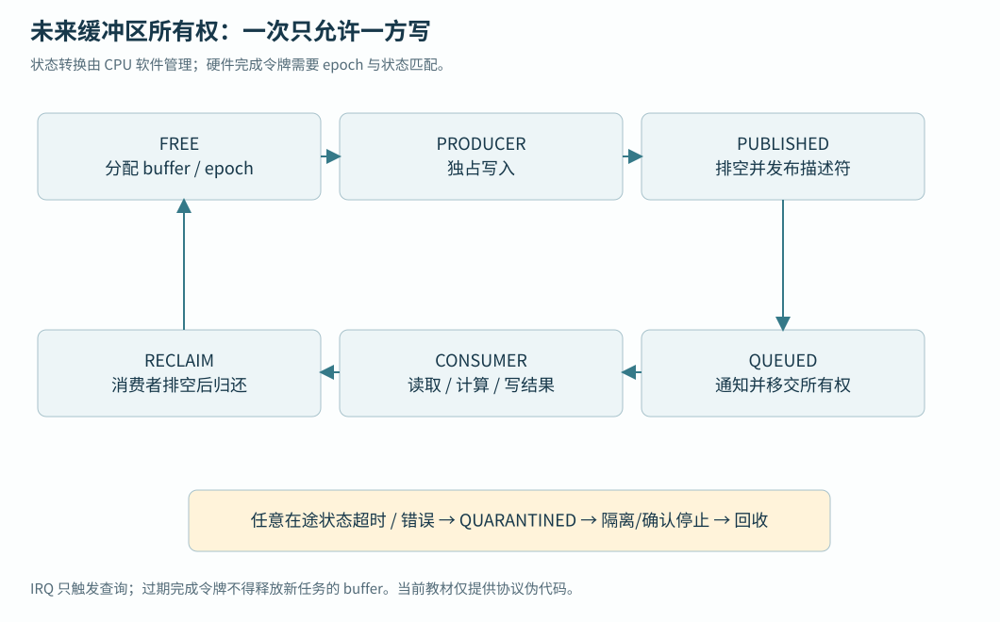
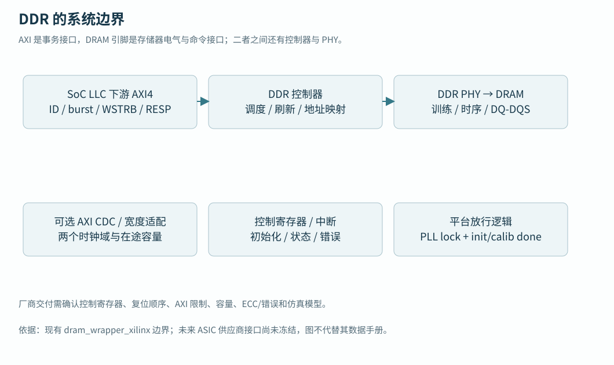

UNDERSTAND · TRACE · BUILD · VERIFY
12 · 存储、DMA 与流量管理
理解共享阵列、缓冲区所有权、搬运完成和错误诊断。
串行设备主要由 CPU 通过寄存器搬取少量数据；大块数据则需要共享存储和主动访存。本章把 LLC/SPM、DMA、流量控制及错误观察连起来，为下一章 Ara 的独立访存建立数据可见性条件。
地址、缓存副本与物理存储
缓存把数据行保存在近端，用索引选择候选组、标签和有效位判断命中。缺失时从下级取回，写回缓存还可能先把被替换的脏行写下去。写回（WB）允许修改暂留缓存；写穿（WT）把写向下传播，但仍有读副本和写缓冲。外部设备访问同一物理地址时，必须明确这些副本如何同步。
SPM 是软件直接管理固定地址的方式，SRAM 是实现存储阵列的技术，两者描述不同层次。当前 LLC 阵列可按 way 分给缓存或 SPM；默认容量为 8 ways × 256 lines × 8 blocks × 64/8 bytes = 128 KiB。启动全部分为 SPM 后，CPU 代码和栈实际依赖这份阵列。

LLC/SPM 的配置和访问路径
CPU 的低 SPM 窗口从 0x10000000 起，可按地址属性进入 L1；0x14000000 是同一阵列的非缓存数据别名，在 LLC 前重映射回低地址。两个窗口共享物理字节。若先用低别名产生缓存副本，再用高别名访问，不同观察者仍可能看到不同内容。当前高别名未包含在默认 SPM 执行区中，本书把它用于共享数据，代码仍从低地址执行。
Cfg.LlcSetAssoc/LlcNumLines/LlcNumBlocks 与 AxiDataWidth 决定阵列容量。LlcOutConnect=1、LlcNotBypass=1 保留 LLC/SPM 和外存出口；1/0 走外存旁路并移除内部 SPM；0/0 关闭该出口；0/1 会导致地址生成与实际实例不一致，应避免采用。取消缓存用途时也要安排原本驻留于阵列的启动空间。
LLC 控制基址为 0x03001000。CFG_SPM(+0/+4) 是 way 位图，CFG_FLUSH(+8/+0xc) 选择清理的 way，COMMIT(+0x10) 提交，FLUSHED(+0x18/+0x1c) 用于观察清理完成，BIST_STATUS(+0x48) 表示自测状态。软件写配置后要等相应完成状态；切走 SPM way 前应迁移其中代码/栈/数据、停止相关发起者并处理脏数据和在途请求。axi_llc_reg32_set_spm 只承担寄存器操作，不替应用迁移栈。
缓冲区所有权与可见性
缓存一致性关心同一地址的多个副本，内存排序关心访问先后，原子性关心操作能否被其他访问打断。三者分别建立契约。CPU 交出缓冲区时，要确保设备能看到刚写的内容；设备完成后，CPU 重新取得所有权时要确保不会继续读旧副本。
一种容易验证的方案是独占共享区域，所有相关路径采用已确认的非缓存属性，配合提交和完成前后的排序。若保留缓存，则 CPU 交出数据前需要可用的 clean/排空流程，收回数据前需要必要的 invalidate；这些操作必须覆盖实际缓存层级。volatile 和 fence 分别约束编译器与顺序，无法独自完成上述缓存维护。

后续 RVV 小实验独占物理 SPM [0x10010000,0x10011000)，CPU 只通过高别名访问 a/b/c，分别从 0x14010000、0x14010400、0x14010800 起，每个使用 548 字节并加守卫。要求单核、全 128 KiB SPM、应用静态区位于低 64 KiB、栈始终高于 0x10011000，期间不切 way、不混用低别名。这个预约是教材示例条件，并未修改生产地址图。
当前 CPU/Ara 协作覆盖到哪里
当前向量 profile 使用 WT L1D；写穿仍保留读副本和待排空写缓冲。CPU 的 CSR_ACC_CONS（0x7c2，bit0）在加速器启用时复位开启。acc_dispatcher 根据标量 store_pending、向量 load/store pending 与 barrier 协调访存，Ara 写地址经过 axi_inval_filter，按 CPU cache line 生成失效请求，并以 inval_ready 接收背压。过滤器保存已接受的 AW 范围；队列不足会反压写地址。

这套机制覆盖接入该专用协议的 CPU/Ara 组合，不自动覆盖 DMA、USB、Link 或未来 NPU。关闭一致性 CSR、改 profile、改地址别名或绕开失效过滤，都改变其前提。失效是控制动作，真正的写数据还要经 W/B 排空；精确的后继观察点依赖 pending 和排序。Ara VRF 是显式寄存器状态，NPU 只能通过约定内存交换其中存出的数据。
| 候选交接方式 | 适用范围与收益 | 必须建立的条件 |
|---|---|---|
| 共享 SPM / 专用 SRAM | 小块或分 tile；低延迟，容易界定所有权 | 容量扣除代码/栈/队列，所有使用者看到同一物理字节；CPU 不留缓存别名副本，NPU 有可达端口 |
| DDR 的非缓存缓冲 | 较大张量；避开 CPU/LLC 副本可降低维护复杂度 | CPU 与 Ara 实际路径也绕过或按有效策略不分配 LLC；仅 CPU PMA 非缓存不足以证明 LLC 不缓存 |
| DDR 缓存缓冲 + 维护 | CPU/Ara 反复使用局部数据可能获益 | 经过验证的 L1/LLC clean、invalidate、排空及错误处理；不得假设当前 profile 已有可直接调用的标准 CBO 指令 |
| 直接流接口 / 一致性接口 | 可减少中间往返，适合稳定数据流或大量细粒度共享 | 新增 backpressure、缓冲、格式/序号/复位协议；一致性还需 snoop、排序与原子机制，验证成本明显增加 |

从取得缓冲区到交还缓冲区
软件分配器维护所有权表：FREE → PRODUCER → PUBLISHED/QUEUED → CONSUMER → RECLAIM → FREE。生产者取得唯一写权限后填充数据；publish 操作确保已定义范围对消费者可见，然后写描述符并通知。消费者取得匹配的任务/epoch 后读取并计算，在输出写响应排空之后报告状态；CPU 校验完成令牌、执行 acquire 所需的排序和失效，再允许后继 Ara 使用。最后一位使用者释放缓冲区。


| 元数据 | 维护者与检查 |
|---|---|
| 物理地址、长度、容量、对齐 | 分配器提供，驱动做溢出/范围/可达检查，设备拒绝非法描述符；虚拟地址不能直接冒充 DMA 地址 |
| 维度、stride、布局、量化类型与 scale/zero-point | 模型调度器和算子接口约定，描述符携带格式版本；生产者和消费者使用同一版本 |
| 所有权、buffer ID、epoch | CPU 软件任务表维护；epoch 区分复用后的新任务，设备回传同一身份 |
| 完成、实际长度、错误码 | 设备在写排空后发布；驱动读状态确认，中断只是提示 |
| deadline、取消、隔离与回收 | 驱动/系统管理器执行；超时不得立即复用仍可能被写入的 buffer |
如果 NPU/ISP 绕过 LLC，而 CPU/Ara 仍经 LLC 读同一 DDR 地址，即使 CPU L1 无副本，LLC 也可能返回旧行；若旧行脏，稍后写回还会覆盖设备新数据。非缓存高 SPM 别名只解决其预约片上区域的特定路径，不能直接用于 DDR。缓存行共享还会让无关 CPU 字段被整行失效或写回，应按真实行大小隔离描述符、状态与数据。
原子性另有边界：当前 AMO/LRSC 处理在 LLC 上游；NPU 的普通旁路写若不被 reservation 监视器看到，CPU 的 SC 可能错误地成功。把原子单元移到 DDR 入口也未必能看到 CPU 的缓存命中或所有副本。初期可规划严格隔离的原子控制区和单写者邮箱；若需求确实要求跨设备共享原子数据，必须设计所有访问者共同遵守的监视/一致性协议并注入竞争写验证。
iDMA 的任务与数据通路
直接存储访问（DMA）把软件描述的搬运变成硬件读写。CPU 配置控制目标端口，寄存器前端组成任务；job FIFO 保存任务，2D midend 将长度、步长和重复次数展开，backend 切分成总线允许的读写 burst，缓冲 R 数据再送 W，并跟踪返回。读取完成和写入完成分别依赖各自响应。
Cfg.Dma 选择实例，DmaConfEnableTwoD 默认 1，DmaJobFifoDepth=2、DmaNumAxInFlight=16、DmaMemSysDepth=8 分别控制不同资源。wrapper 固定 32 位任务 ID、32 位长度、单 stream，并拒绝零长传输。backend 配置 NO_ERROR_HANDLING，软件还需结合外层错误记录。wrapper 没有完成 IRQ；PLIC 中的 DMA 源是读写错误通知。
控制窗口 0x01000000 中，CONF(+0) 配选项，STATUS_0(+4) 反映状态，DST/SRC 地址在 +0xd0/d4、+0xd8/dc，LENGTH 在 +0xe0/e4。参数稳定后读取 NEXT_ID_0(+0x44) 才提交并取得任务 ID；DONE_ID_0(+0x84) 用于完成查询。NEXT_ID 是读带副作用，不能当作普通状态反复刷新。2D 步长和 repetitions 的字节/次数单位按 midend 与驱动核对。
二维搬运的地址与完成语义
把带行间填充的图像看作二维字节数组：每行搬 L 字节，源/目的行起点间距分别为 S、D，共 R 行。对本地 2D midend，行起点按 srcₖ=src₀+k×S、dstₖ=dst₀+k×D 递推；stride 是起点间的字节增量，不是“搬完 L 后再额外跳 S”。例如 L=16、S=32、D=16、R=3，读区分别从 src+0/+32/+64 起，写成连续 48 字节。
midend 接受一个低维请求后才推进地址与计数；末行标 last，backend 仍需等真实响应。这个推导来自 idma_nd_midend 的 src_addr_calc/dst_addr_calc，不代表当前 DMA 桥已可运行。修复门槛通过后，先做三行不等数据与行间守卫，再测跨 burst、部分字节、背压和错误，检查只提交一次 NEXT_ID。
当前 DMA 控制接口的验收门槛
第 03 章的 +4 lane 例子在这里具有实际意义：cheshire_idma_wrap 的 Reg 类型继承 64 位 AxiDataWidth，旧 axi_to_reg/axi_lite_to_reg 保持该宽度；生成 idma_reg64_2d_reg_top 的内部 DW 却固定为 32，读写数据未显示按 addr[2] 做相应 lane 搬移。因此 +0x44/+0x84 的 32 位访问存在静态不匹配。
旧 dif/dma.h 还以 uint64_t 指针读取这些 32 位 ID；历史 GCC 反汇编显示一次请求拆成相邻两次 32 位读。软件改为 32 位读取也不能修复硬件 lane 适配。保留的 advanced.c 默认输出 BLOCKED/rc16、不提交 DMA，这一门槛继续有效。旧 lesson.c 的 dma 分支仅留作历史代码，本轮正式实验不调用它。
后续 S01/V01 应统一桥、生成寄存器和 HAL 宽度，再验证 +0/+4、WSTRB、地址高低半、单次 NEXT_ID 只提交一次、非零 ID、DONE 与错误返回。1D 分支还有 busy 信号命名待核对。上述结论来自静态源码和历史汇编记录，尚无本轮生产 DMA 波形复现。
AXI RT 的预算与发起者规模
AXI RT 在启用时位于发起者与 Crossbar 之间，按地址 region 和周期 budget 控制流量。一次 burst 的字节成本为 (AXLEN+1)<<AXSIZE。软件先 claim guard，再设置区域、读写预算/周期和 LEN_LIMIT，最后开启 RT/IMTU；预算归零会影响请求推进，最终时延还受仲裁和目标服务影响。
寄存器窗口为 0x020c0000，guard 为 0x020c1ffc；RT_ENABLE+0x0c、RT_BYPASSED+0x10、IMTU_ENABLE+0x1c 等含义可查索引。IMTU_ABORT 的预算/周期复位语义不等于通用 DMA 取消。当前生成尺寸为 6 managers×2 regions，SelectedCfg=1 与此默认组合匹配；Ara 全设备组合有 7 个发起者，需要同步生成表。
原 axirt_budget.spm.c 通过 DMA 搬 1024 字节并检查读写预算各扣 1024，可用于理解单位；它运行前同样受 DMA 控制接口门槛约束。其 .dump 是已有软件反汇编，需结合 ELF、配置和真实运行日志才可作为新验证。旧隔离轮询还存在未掩码单 bit 与无超时问题，应由独立任务修复。
总线错误与最小诊断记录
BusErr 跟踪 CPU、DMA、VGA 的地址/ID 与响应，出错时保存记录并产生中断。基址从 0x03009000 起，每单元 0x40 字节，写子块 +0、读子块 +0x20；子块内 ERR_ADDR/ADDR_TOP/META 分别为 +0/+4/+0xc，最后读取 ERR_CODE(+8) 会弹出记录。诊断必须先取地址和元信息，最后消费错误码。
失败报告至少保留任务 ID、源/目的地址、长度、首个错误元素与相应 R/B 响应。DONE 相等仍需检查结果和守卫；超时后先隔离缓冲区，直到确认排空或经过受控系统恢复。当前 VGA 最多 24 个读事务与其错误追踪 CoreMaxTxns=8 的尺寸差异也需专项压力检查。小量正确传输无法覆盖所有并发容量边界。
DDR 子系统：控制器、PHY 与软件如何衔接
DDR DRAM 需要定时刷新、行列命令和训练后的高速数据采样。控制器把 AXI 读写调度成存储命令，PHY 实现时序、电气训练与引脚收发，DRAM 提供实际存储阵列。AXI 的地址范围不等于容量；行/列/bank 映射、颗粒数量、数据位宽与 ECC 都影响可用字节数。

| 供应商接口项 | 需确认的可验收内容 |
|---|---|
| AXI4 | 地址/数据/ID 位宽、最大 burst、窄访问、非对齐、WSTRB、同 ID 顺序、在途量与错误响应；ATOP 在当前上游处理 |
| 时钟 / 复位 / 就绪 | 各时钟来源、CDC 位置、PLL lock、init/calib done、复位最短宽度、重训练/失锁策略 |
| 控制寄存器 | 基址由本工程分配，偏移/位宽/RO-RW-W1C/复位值由供应商规范给出；初始化写表不能猜测 |
| 容量 / 地址 / 保护 | 器件组织与映射、有效范围、越界响应、ECC/错误记录、是否允许保留内容的软复位 |
| 验证与交付 | 控制器/PHY/DRAM 模型、许可、约束、时序角、训练脚本、低功耗/DFT 条件与可公开接口摘要 |
/* 未来平台伪代码：具体 API 和寄存器必须来自 IP 文档。 */
platform_hold_ddr_requests();
ddr_clock_reset_and_init(vendor_parameters);
if (!wait_ready_until(deadline)) return DDR_INIT_TIMEOUT;
platform_release_ddr_requests();
/* 从 SPM 执行：小范围写读 → 地址/字节使能 → burst/背压 → 并发与错误。 */DDR 调试程序及栈先留在已验证 SPM；若程序自己在故障 DDR 执行，很难可靠记录错误。先验证唯一地址模式及 guard，再扩到容量边界、刷新压力和 CPU/Ara/NPU 并发。评估带宽时区分 AXI 有效字节、DDR 理论峰值、控制器效率以及仲裁/同步开销，记录系统条件后才可用于模型预算。
DMA 不发原子指令，普通旁路写还会影响 LR/SC 吗？
会。LR/SC 的保留状态必须能观察相关地址的竞争写；绕过上游监视器的普通写同样会破坏预期共享原子语义。